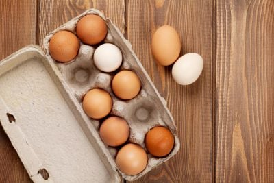
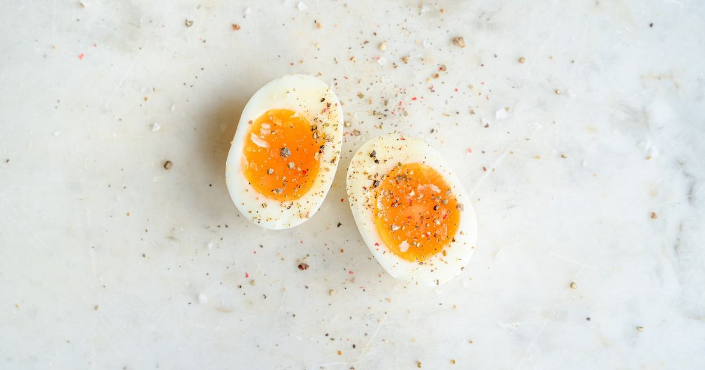
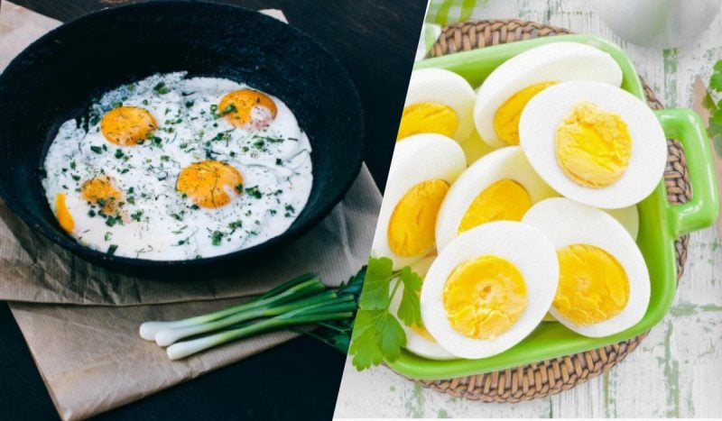

Про продукт
Яйця — це справді дивовижний і універсальний продукт, який багато хто вважає одним із найкращих
У кулінарії широко застосовуються обидві складові яйця: і жовток, і білок
Користь
Яйця мають унікальну харчову цінність: вони містять в собі усі дев’ять незамінних амінокислот, вітаміни A, D, E, K і B12 та антиоксиданти лютеїн і зеаксантин
Способи приготування
- Варені:
- круто
- некруто
- «в мішечку»
- пашот
- Смажені:
- яєчня
- омлет
- Інші способи:
- запечені
- мариновані
- Застосування у інших стравах:
- випічка
- соуси
- десерти
- напої
Джерела:
Зображення продукту


